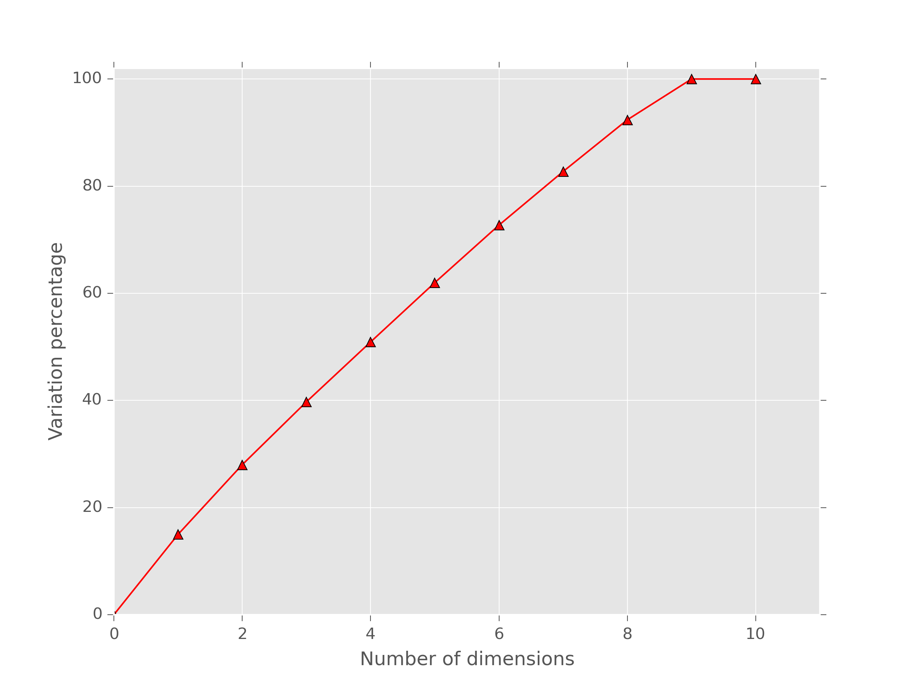

{kind=link}
{kind=link}
{kind=link}
{kind=link}
{kind=link}
 SVG矢量图版本
SVG矢量图版本| #SN | Files | name | class_id | classname |
|---|---|---|---|---|
S31612 | 31612RB_1.fq.gz,31612RB_2.fq.gz | S31612 | 1 | control |
S29620 | 29620RB_1.fq.gz,29620RB_2.fq.gz | S29620 | 1 | control |
S26146 | 26146RB_1.fq.gz,26146RB_2.fq.gz | S26146 | 1 | control |
S30548 | 30548RB_1.fq.gz,30548RB_2.fq.gz | S30548 | 1 | control |
S30956 | 30956RB_1.fq.gz,30956RB_2.fq.gz | S30956 | 1 | control |
S31533 | 31533RB_1.fq.gz,31533RB_2.fq.gz | S31533 | 2 | case |
S29615 | 29615RB_1.fq.gz,29615RB_2.fq.gz | S29615 | 2 | case |
S31680 | 31680RB_1.fq.gz,31680RB_2.fq.gz | S31680 | 2 | case |
S30686 | 30686RB_1.fq.gz,30686RB_2.fq.gz | S30686 | 2 | case |
S30644 | 30644RB_1.fq.gz,30644RB_2.fq.gz | S30644 | 3 | outline |
对各样本表达水平，采用log2变换，并计算概率密度。查看各样本及各组间表达水平的分布情况。概率密度估计采用Kernel density estimation， implementation in python with scipy（http://www.scipy.org/）
对各样本表达水平，采用log2变换，并计算累积概率密度。查看各样本及各组间表达水平的分布情况。
对各样本表达水平，采用log2变换，并绘制箱式图。查看各样本及各组间表达水平的分布情况。
计算样本两两间的fisher 相关系数， 将相关系数矩阵按实验分组形式，绘制成热图。样本处理组间，大部分表达具有相关性，主要是因为维持生命基本活动的大部分基因均不差异表达，只有少部分为差异表达（当处理条件十分剧烈时，实验组和处理组间可能并不满足此假设，但组内样本应满足此假设）。因此，各样本间，表达水平相关性应较高。若图中存在特异性的样本，或实验条件不统一且未做校正时，该特殊样本与其他样本的表达相关性会非常低。
| #correlation | S31612 | S29620 | S26146 | S30548 | S30956 | S31533 | S29615 | S31680 | S30686 | S30644 |
|---|---|---|---|---|---|---|---|---|---|---|
S31612 | 1.000 | 0.210 | 0.007 | 0.931 | 0.882 | 0.881 | 0.090 | 0.790 | 0.949 | 0.849 |
S29620 | 0.210 | 1.000 | 0.965 | 0.308 | 0.193 | 0.193 | 0.979 | 0.563 | 0.191 | 0.229 |
S26146 | 0.007 | 0.965 | 1.000 | 0.085 | 0.008 | 0.008 | 0.996 | 0.374 | 0.006 | 0.009 |
S30548 | 0.931 | 0.308 | 0.085 | 1.000 | 0.833 | 0.828 | 0.166 | 0.891 | 0.874 | 0.932 |
S30956 | 0.882 | 0.193 | 0.008 | 0.833 | 1.000 | 0.989 | 0.094 | 0.794 | 0.832 | 0.832 |
S31533 | 0.881 | 0.193 | 0.008 | 0.828 | 0.989 | 1.000 | 0.096 | 0.806 | 0.827 | 0.842 |
S29615 | 0.090 | 0.979 | 0.996 | 0.166 | 0.094 | 0.096 | 1.000 | 0.451 | 0.084 | 0.092 |
S31680 | 0.790 | 0.563 | 0.374 | 0.891 | 0.794 | 0.806 | 0.451 | 1.000 | 0.713 | 0.911 |
S30686 | 0.949 | 0.191 | 0.006 | 0.874 | 0.832 | 0.827 | 0.084 | 0.713 | 1.000 | 0.742 |
S30644 | 0.849 | 0.229 | 0.009 | 0.932 | 0.832 | 0.842 | 0.092 | 0.911 | 0.742 | 1.000 |
在同一组实验中，即使是相互比较的对照组与实验组之间，大部分基因的表达量还是应该保持一致的。当使用相对对数表达水平（Relative Log Expression(RLE)）的箱线图来控制不同组之间的实验质量时，箱线图应该在垂直中央相类的位置（通常接近0）。如果有一个样本的表现和其它的平行组都很不同，那说明它可能出现了质量问题。
基于表达水平数据的样本聚类，计算样本间欧式距离，采用离差平方和法（wald法）进行层次聚类，验证聚类结果是否同实验设计基本一致。若聚类结果明显不一致，则样本间存在着明显的其他未知的因素，而不仅仅是实验处理效应。
多维尺度分析(Multi Dimensional Scaling, MDS)是一种将多维空间的研究对象简化到低维空间进行定位、分析和归类，同时又保留对象间原始关系的数据分析方法。此处我们采用样本间欧式距离反映样本间的差异，选择前3个本征值最大的维度，绘制样本在前三个维度上的分布，若实验处理因素为表达差异的主要因素，则一般而言，样本组内差异应小于组间差异。
前n个维度累积解释变异的百分比图(见下图)。其中，前三个维度，累积解释变异的百分比: 14.99%, 28.00%, 39.74%
SVG矢量图版本
样本在前三个维度中的空间分布图
{kind=link}
{kind=link}
{kind=link}